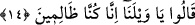

İçinde bulunduğunuz refâha” size verilip de kendileriyle taşkınlık yaptığınız,
nankörlüğe düştüğünüz, Veren’den ve O’na şükretmekten yüz çevirdiğiniz geniş nimetler
ile hoş duruma “ve” iftihar edip övündüğünüz “yurtlarınıza dönün!”
Mesnevî’de der ki:
Renkle, kokuyla, mevkile öğünmek,
Çocukları sevindirir, aldatır!
“Çünkü size sorular sorulacak!” İnsanlar, bir şeyler sormak, danışmak, önemli
konularda ve ortaya çıkan sıkıntılar için gerekli planlamayı yapmak üzere size
yönelecekler. Nitekim her memlekette insanların büyükleriyle ilişkisi böyledir. Onlara
sormadan karara varmazlar.
14. “Vay başımıza gelenlere, gerçekten biz zalim insanlarmışız.” dediler.
Kaçıp kurtulma ümidini yitirip de üzerlerine azabın indirileceğini kesin olarak
anlayınca: “Vay başımıza gelenlere” Yazık bize, ey helâk edici azab üzerimize gel. Ey
yok edici azab, şimdi senin vaktindir. “Gerçekten biz zâlim insanlarmışız.” dediler.”
Tavırlarımızla azâba uğratılmaya müstehak olmuşuz. İşte bu, onların zulmettiklerinin,
zulmün ardından azâbın geleceğinin ve kendilerine fayda vermediği bir zamanda buna
pişman olduklarının itirafıdır.
15. Biz kendilerini, kuruyup biçilmiş ekine, sönmüş ateşe çevirinceye kadar bu
feryatları sürüp gider.
“Biz kendilerini, kuruyup biçilmiş ekine,” hasad edilmiş mahsûle “sönmüş ateşe”
yâni ölülere “çevirinceye kadar bu feryatları” yâni tekrar tekrar bağırıp çağırmaları ve
“Vay başımıza gelenlere, gerçekten biz zâlim insanlarmışız.” demeleri “sürüp
gider.”
Âyet, zulmün mâmur beldeleri harab edeceğine delâlet etmektedir.
Şeyh Sa‘dî (k.s.) der ki:
Hak bir kavme iyilik murâd etse
Âdil ve tedbirli bir padişah gönderir
Âlemi vîrâneye döndürmek istese